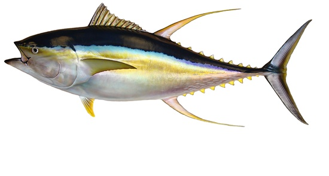
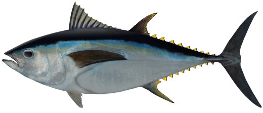
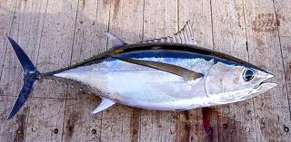
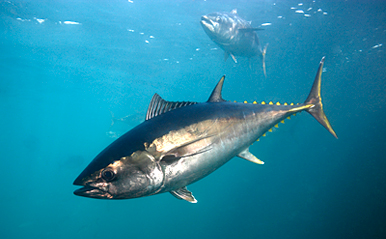
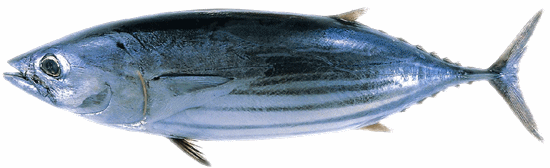
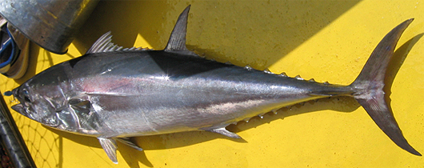

ปลาทูน่า
ปลาทูน่า หรือ ปลาโอ (อังกฤษ: tuna; ญี่ปุ่น: ツナ) เป็นปลาทะเลกลุ่มหนึ่ง ในเผ่า
Thunnini วงศ์ Scombridae โดยเฉพาะในสกุล Thunnus จัดเป็นปลาเศรษฐกิจที่มีความสำคัญมาก
เนื้อของปลาทูน่าจะมีสีชมพูหรือแดงเข้ม ต่างจากปลาทั่วไปที่มักจะมีเนื้อสีขาว
นิยมเอามาทำเป็นปลากระป๋อง หรือปรุงสดต่าง ๆ เช่น ซาชิมิ
ปลาทูน่า มีลักษณะรวม คือ อาศัยอยู่เป็นฝูงในทะเลหรือมหาสมุทรห่างจากชายฝั่ง มีรูปร่างเพรียวคล้ายกระสวย
บริเวณฐานครีบหูมีกลุ่มเกล็ดเล็ก ๆ ครีบหางเว้าลึก เป็นปลาที่ว่ายน้ำได้รวดเร็วว่องไวมาก
1. ปลาทูน่าครีบเหลือง (Yellowfin Tuna)
ชื่อวิทยาศาสตร์ Thunnus albacares เป็นปลาทูน่าขนาดใหญ่ ชอบอาศัยในมหาสมุทรเขตร้อน และอบอุ่น ในระดับความลึกตั้งแต่ผิวตื้นไปจนถึงลึก 300 เมตร ในช่วงอุณหภูมิ 18-31 องศาเซลเซียส ลักษณะเด่นของทูน่าครีบเหลือง คือ มีส่วนกว้างของลำตัวบริเวณกึ่งกลางของครีบหลังอันแรก ครีบหูมีความยาวถึงกึ่งกลางของฐานครีบหลังอันที่สอง ด้านหลังเป็นสีน้ำเงินดำ และค่อยไล่สีมาเป็นสีเหลืองบริเวณด้านข้างลำตัว และมีสีเงินบริเวณส่วนล่างของลำตัว เอกลักษณ์ของทูน่าครีบเหลืองอย่างหนึ่ง คือ เมื่อผ่าท้องจะพบบริเวณส่วนล่างของตับไม่มีลาย ปลาทูน่าครีบเหลืองในวัยอ่อนจะมีจุดสีเข้มเป็นแถวตามแนวดิ่ง ประมาณ 20 แถว เมื่อโตเต็มที่จุดนี้จะหายไป ส่วนครีบหลัง และครีบก้นมีสีเหลืองสด มีครีบเล็กสีเหลือง 7-10 คู่ บริเวณส่วนปลายครีบเล็กจะมีแถบสีดำ ขนาดทูน่าครีบเหลืองที่โตเต็มที่จะมีความยาวได้มากกว่า 2 เมตร แต่พบทั่วไปประมาณ 0.5-1.5 เมตร เนื้อทูน่าครีบเหลืองจะมีสีแดง แต่เมื่อถูกความร้อนจะเปลี่ยนเป็นสีขาว เนื้อแน่น ไม่ยุ่ย นิยมนำมารับประทานสดหรือทำเป็นทูน่ากระป๋อง แต่นิยมรองมาจากทูน่าครีบยาว
2. ปลาทูน่าตาโต (Bigeye Tuna)
ชื่อวิทยาศาสตร์ Thunnus obesus จัดเป็นปลาทูน่าขนาดใหญ่ ชอบอาศัยในมหาสมุทรเขตร้อน และเขตอบอุ่น ชอบว่ายน้ำในระดับผิวน้ำจนถึงระดับความลึก 250 เมตร มีลักษณะพิเศษ คือ ความกว้างที่สุดของลำตัวอยู่บริเวณกึ่งกลางของครีบหลังอันแรก มีลักษณะคล้ายปลาทูน่าครีบเหลือง แต่ลำตัวอ้วน และสั้นกว่า เมื่อผ่าท้องจะพบด้านล่างของตับมีลาย ซึ่งต่างจากปลาทูน่าครีบเหลืองที่ไม่มีลาย ขนาดลูกตามีขนาดใหญ่ ที่สันลำตัวมีสีน้ำเงินดำ และค่อยๆไล่สีลงมาในวัยอ่อน และตัวเต็มวัย ด้านข้างลำตัวเป็นสีเงินด้านล่างลำตัวมีจุดสีเข้มในแถวดิ่ง ครีบหลังอันแรกมีสีเหลืองเข้ม ครีบหลังที่สองมีสีเหลืองจาง มีครีบเล็กสีเหลือง 7-10 คู่ ที่ปลายครีบเล็กมีแถบสีดำ ขนาดของปลาทูน่าตาโตเมื่อโตเต็มที่จะมีขนาดยาวได้มากกว่า 2 เมตร แต่ทั่วไปพบยาวประมาณ 0.5-1.8 เมตร เนื้อปลามีสีแดง และเมื่อโดนความร้อนจะไม่เปลี่ยนเป็นสีขาวเหมือนปลาทูน่าครีบเหลือง จึงไม่นิยมทำเป็นอาหารกระป๋อง นิยมนำมารับประทานดิบหรือปรุงเป็นอาหารมากกว่า
3. ปลาทูน่าครีบยาว (Longfin Tuna)
มีชื่อวิทยาศาสตร์ Thunnus alallunga จัดเป็นปลาทูน่าขนาดใหญ่ อาศัยในมหาสมุทรเขตร้อน และเขตอบอุ่น อาศัยในระดับผิวน้ำจนถึงกลางน้ำที่ระดับความลึก 600 เมตร มีลักษณะพิเศษ คือ บริเวณความกว้างที่สุดของลำตัวอยู่บริเวณทางท้ายลำตัวมากกว่าทูน่าชนิดอื่น ครีบหูยาวมาก และมีปลายงอนเข้าหากัน ตัวที่โตเต็มที่จะมีจะมีแถบสีขาวตามแนวดิ่ง เมื่อผ่าท้องจะพบด้านล่างของตับมีลาย สันลำตัวมีสีน้ำเงินดำ และค่อยไล่สีเปลี่ยนเป็นสีขาวลงมาจนถึงด้านล่างลำตัว ครีบหลังอันแรกมีสีเหลืองเข้ม ครีบหลังที่สองมีสีเหลืองจาง ครีบเล็กมีประมาณ 7-8 คู่ ครีบเล็กที่ถัดจากครีบก้นมีสีดำ ครีบเล็กที่ถัดจากครีบหลังมีสีเหลือง ขนาดของปลาทูน่าครีบยาว เมื่อโตเต็มที่จะมีขนาดยาวได้มากกว่า 130 เซนติเมตร หนักมากกว่า 40 กิโลกรัม แต่ทั่วไปพบขนาดยาวประมาณ 80-100 เซนติเมตร มีเนื้อแน่น รสมันอร่อย จนได้รับขนานนามว่า ไก่ทะเล เนื้อเมื่อโดนความร้อนจะเปลี่ยนเป็นสีขาว นิยมนำมาผลิตอาหารกระป๋องหรือประกอบอาหาร
4. ปลาทูน่าครีบสีน้ำเงินใต้ (Southern Bluefin Tuna)
มีชื่อวิทยาศาสตร์ Thunnus maccoyii เป็นปลาทูน่าขนาดใหญ่ อาศัยในแถบเขตร้อน และอบอุ่น พบแพร่กระจายมากทางตะวันตก และตะวันตกเฉียงเหนือของประเทศออสเตรเลีย แถบเกาะทัสมาเนีย และประเทศนิวซีแลนด์ อุณหภูมิน้ำในช่วง 13.5-25.5 องศาเซลเซียส มีลักษณะพิเศษ คือ มีส่วนกว้างที่สุดของลำตัวอยู่บริเวณกึ่งกลางของครีบหลังอันแรก หัวโต ลำตัวค่อนข้างอ้วนสั้น ครีบหูสั้น เมื่อผ่าท้องจะพบด้านล่างของตับเป็นลาย ส่วนสันหลังมีสีน้ำเงินดำ และค่อยๆไล่สีเปลี่ยนเป็นสีเงินจนถึงด้านล่างลำตัว ครีบหลังอันแรกมีสีเหลืองเข้มหรือสีน้ำเงิน ครีบเล็กที่ถัดจากครีบหลัง และครีบก้นมีสีเหลือง ขอบครีบเป็นสีดำ มีครีบเล็กประมาณ 7-10 คู่ ตัวที่มีขนาดใหญ่บริเวณคอดหางจะมีสีเหลือง ปลาทูน่าครีบสีน้ำเงินใต้ที่มีลำตัวขนาดใหญ่จะมีความยาวได้มากกว่า 2.25 เมตร มีน้ำหนักมากกว่า 250 กิโลกรัม แต่ทั่วไปพบขนาดยาวประมาณ 100-150 เซนติเมตร มักนำมารับประทานสดหรือนำมาประกอบอาหารมากกว่าทำเป็นอาหารกระป๋อง
5. ปลาทูน่าครีบสีน้ำเงินเหนือ (Northern Bluefin Tuna)

มีชื่อวิทยาศาสตร์ Thunnus thynnus จัดเป็นปลาทูน่าขนาดใหญ่ อาศัยในแถบเขตร้อน และอบอุ่น พบแพร่กระจายเป็น 2 กลุ่ม คือ กลุ่มแรกทางมหาสมุทรแอตแลนติกฝั่งตะวันตก และตะวันออก, ทางตอนใต้อ่าวเม็กซิโก-ทะเลแคริบเบียน, เวเนซุเอร่า-บราซิล, ทะเลเมดิเตอเรเนียน, ทะเลแอฟริกาใต้ กลุ่มที่ 2 พบทางแถบมหาสมุทรแปซิฟิกจากอลาสก้าจนถึงทางใต้ของแคลิฟอร์เนีย และฝั่งตะวันตกจากเกาะซาคารินจนถึงทางใต้ของทะเลโอค็อตสะกะ และทางตอนเหนือของฟิลิปปินส์ มีลักษณะพิเศษ คือ มีส่วนกว้างที่สุดของลำตัวอยู่บริเวณตอนต้นของครีบหลังอันแรก ลำตัวค่อนข้างอ้วนสั้น ครีบหูสั้น หัวโต ตาโต เมื่อผ่าท้องจะพบด้านล่างของตับเป็นลาย ส่วนสันหลังมีสีดำ และค่อยๆไล่สีเปลี่ยนเป็นสีเงินจนถึงด้านล่างลำตัว และสีเส้นขวางลำตัว ไม่มีสี ครีบหลังอันแรกมีสีเหลืองเข้มหรือสีน้ำเงิน ครีบหลังที่สองมีสีน้ำตาลแดง ครีบเล็กที่ถัดจากครีบหลัง และครีบก้นมีสีเหลือง ขอบครีบเป็นสีดำ มีครีบเล็กประมาณ 7-10 คู่ ตัวที่มีขนาดใหญ่บริเวณคอดหางจะมีสีดำ ปลาทูน่าครีบสีน้ำเงินเหนือที่มีลำตัวขนาดใหญ่จะมีความยาวได้มากกว่า 3 เมตร มีน้ำหนักมากกว่า 550 กิโลกรัม แต่ทั่วไปพบขนาดยาวประมาณ 100-250 เซนติเมตร มักนำมารับประทานสดหรือนำมาประกอบอาหารมากกว่าทำเป็นอาหารกระป๋อง
6. ปลาโอแถบ (Skipjack Tuna)
มี ชื่อวิทยาศาสตร์ Kutsuwonus peramis จัดเป็นปลาทูน่าขนาดเล็ก อาศัยในแถบเขตร้อน และอบอุ่น ชอบว่ายน้ำในระดับผิวน้ำตื้นจนถึงความลึก 260 เมตร อุณหภูมิน้ำ 20-24 องศาเซลเซียส มีลักษณะพิเศษ คือ ลำตัวมีรูปทรงเรียวยาวแบบกระสวย ฟันเป็นแถวเดี่ยวรูปโคน ครีบหูสั้น ไม่มีกระเพราะลม ส่วนสันหลังมีสีม่วงดำ และค่อยๆไล่สีเปลี่ยนเป็นสีเงินจนถึงด้านล่างลำตัว แลด้านข้างลำตัวมีแถบสีดำตลอดความยาวลำตัว 4-5 แถบ ในวัยอ่อนแถบนี้จะเป็นจุดต่อเนื่องกัน ไม่มีสี ครีบเล็กมีสีดำ ประมาณ 7-10 คู่ ปลาโอแถบ พบขนาดใหญ่สุดประมาณ 180 เซนติเมตร น้ำหนักประมาณ 30-40 กิโลกรัม มักนำมารับประทานสดหรือนำมาทำปลากระป๋องทูน่า จัดเป็นปลาที่มีการจับ และนำมาแปรรูปมากที่สุดของพันธุ์ปลาทูน่า
7. ปลาโอดำ (Lungtail Tuna)
มี ชื่อวิทยาศาสตร์ Thunnus tunggol จัดเป็นปลาทูน่าขนาดเล็ก อาศัยในแถบเขตร้อน และอบอุ่น ชอบว่ายน้ำในระดับผิวน้ำตื้นจนถึงความลึก 200 เมตร พบกระจายมากในแถบประเทศญี่ปุ่น ประเทศเอเชียตะวันออกเฉียงใต้ ประเทศปาปัวกีนี ประเทศออสเตรเลีย ไทย อินเดีย เป็นต้น มีลักษณะพิเศษ คือ มีส่วนกว้างที่สุดของลำตัวอยู่บริเวณกึ่งกลางของครีบหลังอันแรก เมื่อผ่าท้องจะพบด้านล่างของตับไม่เป็นลาย ในวัยอ่อนจะมีลักษณะคล้ายปลาทูน่าครีบสีน้ำเงินมากส่วนสันหลังมีสีน้ำเงินดำ และค่อยๆไล่สีเปลี่ยนเป็นสีเงินจนถึงด้านล่างลำตัว ในตัวเต็มวัยขนาดใหญ่จะพบจุดสีเข้ม รูปกลมรี เป็นแถวเรียงตามแนวขนานกับลำตัว ครีบหลัง ครีบอก และครีบท้องมีสีดำ ครีบก้นมีสีน้ำเงิน ปลายก้านครีบของครีบหลังที่สอง และครีบก้นมีสีเหลืองครีบเล็กมีสีเหลือง และปลายครีบเล็กมีสีเทา ปลาโอแถบ พบขนาดใหญ่สุดประมาณ 130 เซนติเมตร น้ำหนักประมาณ 30-35 กิโลกรัม ขนาดทั่วไปที่พบมีความยาวประมาณ 40-70 เซนติเมตร มักนำมารับประทานสดหรือนำมาทำปลากระป๋องทูน่า